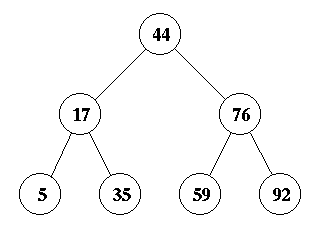
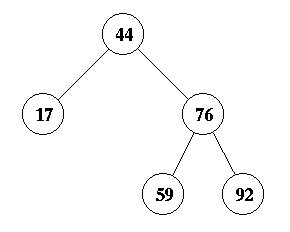

Suppose you insert a node with a key of 64 into the tree.
Question 4: How many
total rotations will do you?
(Count a double rotation as two rotations)
Question 5:
Draw the tree that results after 64 is inserted.

Question 6:
Suppose you insert a node with a key of 99 into the tree. Draw
the resulting AVL tree.
Question 7: Instead, suppose that you insert a node
with a key of 64 into the tree pictured above. Draw the
resulting AVL tree.